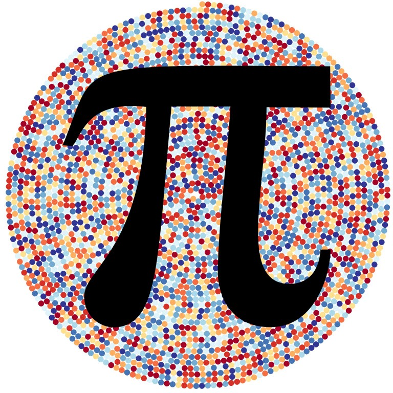

<p>O número <span class="math inline">\(\pi\)</span> é 3.1416.</p>
<p>Um gráfico vai aqui</p>
<pre class="r"><code>x &lt;- rnorm(100)
hist(x)</code></pre>
<p>}}index_files/figure-html/unnamed-chunk-1-1.png" width="672" /></p>
<p>Uma figura do pi.</p>
<p></p>
